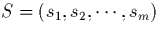
, dit message "source". On lui fait correspondre le message cod suivant: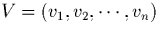
,dit message "voie". V est dtermin par les relations suivantes (les sommes sont faites modulo 2 et les ai valent 0 ou 1):
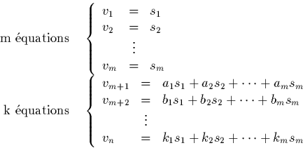
On peut aussi crire matriciellement:
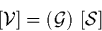
avec:
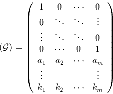
Aprs transmission, on reoit le message binaire
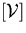
,auquel on va faire subir les quations de vrification suivantes:
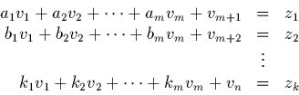
Il est clair que si aucune erreur n'est apparue lors de la transmission, alors le vecteur
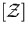
est nul, avec:
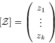
Sinon, en gnral, il est non nul; en tout cas, pour un nombre limit
d'erreur (<k), il est systmatiquement non nul. Le principe de la
correction d'une erreur est d'tablir une bijection entre l'ensemble
des vecteurs non nuls (dits "syndromes
d'erreurs") et l'ensemble des erreurs possibles sachant qu'il est suppos
n'y en avoir qu'une.
Le vecteur ayant k composantes et le vecteur
transmis ayant n composantes (n bits, donc
n erreurs possibles), cela amne la condition n=2k-1, ce qui
dimensionne le systme d'quations, si l'on se fixe n a priori (ou
m). On a par ailleurs videmment n=m+k.
Il reste dterminer les valeurs des coefficients des k quations de dpart. Pour cela crivons la relation de vrification sans, puis avec une erreur:
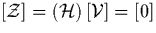
, avec:
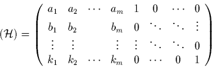
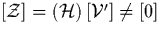
, avec:
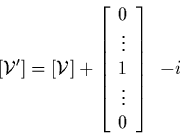
Posons:
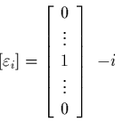
Alors, on a:
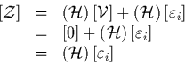
L'opration
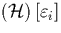
est triviale vu la forme de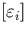
: le rsultat est la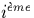
colonne de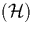
. Ainsi, chaque erreur diffrente est associe une colonne diffrente et une seule de .La bijection est alors ralise si toutes les colonnes de sont diffrentes entre elles et bien sr non nulles. D'o la construction de et aussi celle de
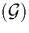
. Alors, une fois cette construction faite, une erreur sera localise grce la valeur du syndrome trouve grce une simple table de correspondance.Exemple:
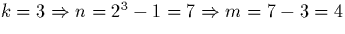
.Construction de :
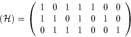
D'o:
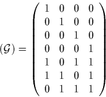